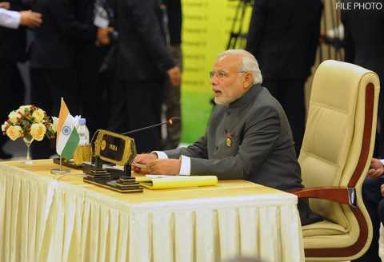
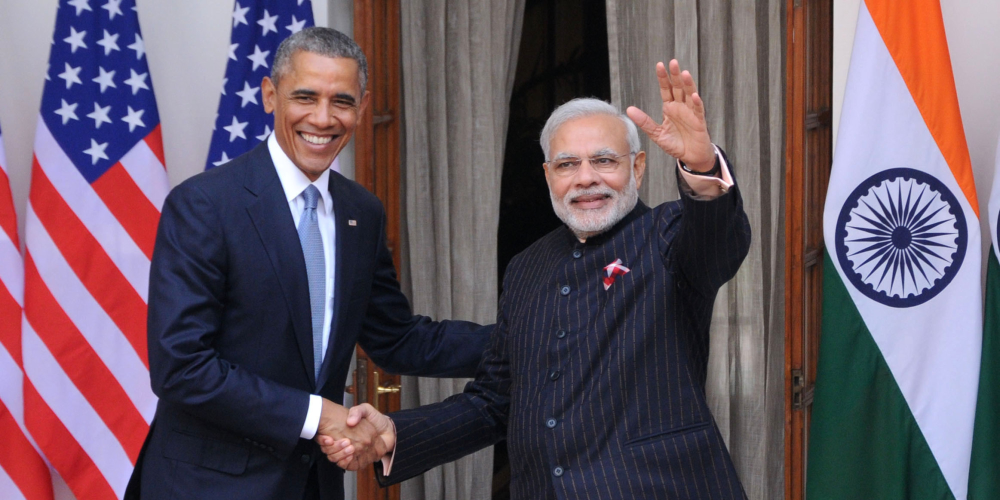
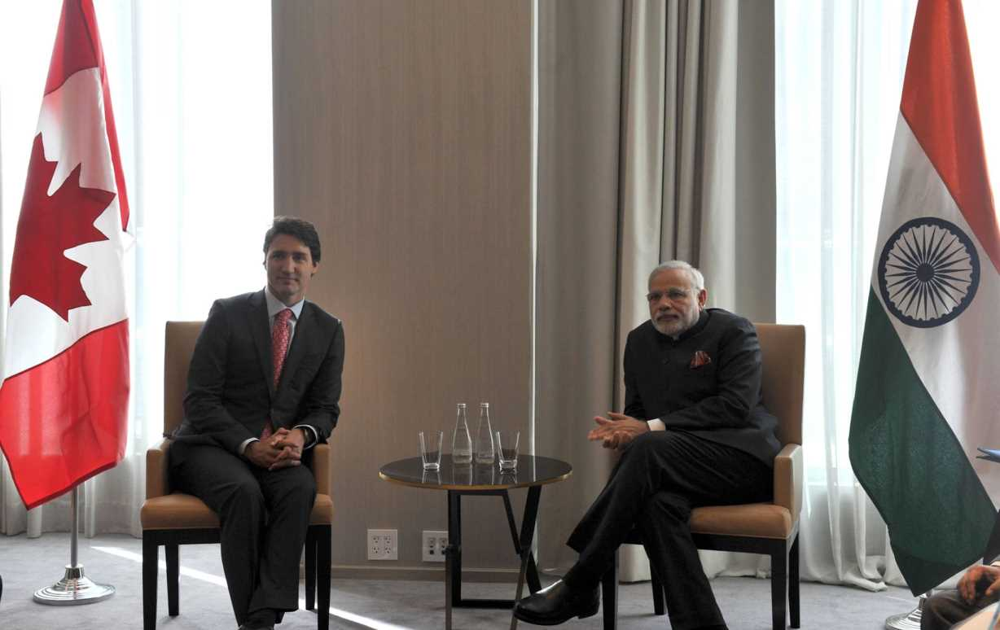

Narendra Modi Foreign Tours
NaMo
Narendra Modi

Profile
15th Prime Minister of India Incumbent
- Born: 17/09/1950
- Birth Place: Vadnagar Gujarat
- Party: Bhartiya Janta Party
- PM From: 26 May 2014
NaMo
LokSabha
NaMo
LokSabha
1). BJP Govt. convinced Saudi Arabia not to charge " On-Time Delivery 1Premium charges" on Crude Oil - Young Petroleum Minister Dharmendra Pradhan & External Affairs Minister Sushma Swaraj sealed the deal. Saved the country thousands of crores... 2). India will build 4 Hydroelectric power stations + Dams in Bhutan (India will get lion's share in Green energy that will be produced in future from these projects) 3). India will build Biggest ever dam of Nepal (China was trying hard to get that) - India will get 83% Green energy produce from that hydro power station for free - in future. . .
4). Increased relationship with Japan and they agreed to invest $30 Billion in DMIC (Delhi - Mumbai Investment Corridor) 5). Increased strategic relationship with Vietnam and Vietnam has now agreed to give contract of Oil exploration to ONGC-Videsh (UPA was not ready to take this at all because they were worried about China - and getting into a conflict of interests on south China sea) 6). Remittances are a key source of income for households and support for the economy in developing countries. We should define a target date before 2030 to reduce the high costs of transferring remittances, he said said in his intervention at G20 Working Lunch on Development and Climate Change in Antalya. India has been pushing for global efforts to bring down transaction cost for remittances.
7). China leaning President Rajapakse lost elections in Sri Lanka - Remember UPA lost "Hambantota" port development - read latest report of CIA, where they mention RAW has played a major role in power shift of Sri Lanka. Sri Lanka has backed out of Chinese contract and shifted to Indian project managers. 8). With China, as Trade Deficit was increasing, NaMo forced their hand. Anti-Dumping will come soon so China will invest heavily into India. - China has already committed $ 20 billion Investment in India. That's nearly ₹ 140,000 crores. 9). On Security - I think adding Ajit Doval to his team is the best decision by NaMo. See the recent tie-up with Pentagon, Israel & Japan. . Now see how we stopped the Terror Boat and listen to his words... "Any Mumbai like attack from Pakistan and Pakistan will lose Baluchistan!" That's the language of deterrence that I want to hear as an Indian. We won't hit first, but if you do, we surely won't turn the other cheek.... 10). India approved the border road in the NorthEast and around India - China border - Remember just because of China's opposition, the ADB (Asian Development Bank) didn't give us funds during UPA regime and UPA held that file under "Environment Ministry control - Remember the infamous "JAYANTHI TAX "? No one bothered about the disastrous effect on our armed forces.
11). Till recently we were exclusively buying Nuclear Reactors from Russia or USA and it was much like beggar kind of situation because they were worried about usage of Nuclear reactor for some other use. So only what they opted to give us, we could get. Now Narendra Modi was able to convince France and now France will make Nuclear reactors with the latest technology in India. On MAKE IN INDIA efforts with collaboration with an Indian company as a partner 12). During 26th Jan. visit of Barack Obama , NaMo convinced USA to drop rule of Nuclear fuel tracking and sorted out Liabilities rules which now open the gates for next 16 Nuclear power plant projects. . . .
13). For the first time after 42 yrs Indian Prime Minister visited Canada not to attend some meeting but as a specific state visit, in a Bilateral deal, India was able convince to Canada to supply Uranium for India's Nuclear reactors for next 5 years. It will be of great help to Resolve India's Power problems. . . . 14). Canada approves visa on arrival for all Indian tourists. 15). India's Air defense was getting weaker by the day, UPA was very happy to let it happen despite repeated specific inputs from the armed forces, NaMo renegotiated Rafale fighter Jets deal with France personally and bought 36 Jets on ASAP basis. At better than rack rates. No middlemen, no commissions
Foreign Tours